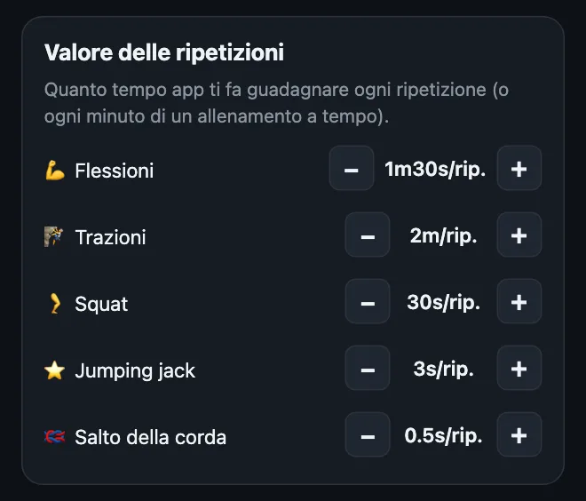

Quanto tempo schermo dovrebbe valere una flessione?
Ciao a tutti! In HonorFit ogni ripetizione che segni ti compra tempo per le app, e il prezzo lo decidi tu. È la domanda che mi fanno più spesso dopo averla configurata: quanto dovrebbe valere una flessione? Un minuto? Dieci secondi? Ecco come la vedo io.
I valori predefiniti
Se non tocchi niente, ecco cosa ottieni:
| Esercizio | Vale di base |
|---|---|
| 💪 Flessioni | 1 minuto a ripetizione |
| 🧗 Trazioni | 1m30s a ripetizione |
| 🔥 Addominali, 🦵 Squat | 30 secondi a ripetizione |
| Qualsiasi esercizio che aggiungi | 30 secondi a ripetizione |
| Allenamenti a tempo (camminata, yoga, HIIT) | 30 secondi al minuto |
| Allenamenti a distanza | 5 minuti al km, o 8 al miglio |
| 👟 Passi | 3 minuti ogni 1.000 passi |
Quindi 20 flessioni sono 20 minuti di Instagram. Per tanta gente, per cominciare, va più o meno bene. Per altri è troppo generoso o troppo tirchio. Tu da che parte stai?
Un modo per scegliere in una riga
Pensa a due numeri:
- Quanto tempo nelle app bloccate ti sembra OK in una giornata normale? Sii onesto, non idealista.
- Quante ripetizioni faresti davvero per averlo, sparse durante la giornata?
Poi dividi: valore a ripetizione = tempo ÷ ripetizioni. Vuoi un’ora di TikTok per 60 flessioni? 1 minuto a ripetizione. Vuoi la stessa ora, ma te la senti di fare 120 squat? 30 secondi a squat. Non c’è molto altro.
Se la risposta al punto 2 è “non tante”, va bene lo stesso. Dai alle ripetizioni un prezzo alto e usa una base giornaliera (Impostazioni, gratis) per iniziare ogni giornata con un po’ di tempo già in banca.
Qualche configurazione da copiare
| Esercizio | Ogni rip. vale | Cosa ti fa guadagnare una serie |
|---|---|---|
| Flessioni (principiante) | 1m30s | 10 flessioni = 15 minuti |
| Flessioni (le fai da un po’) | 30 secondi | 40 flessioni = 20 minuti |
| Jumping jack | 3 secondi | 100 jumping jack = 5 minuti |
| Salto della corda (per salto) | 0,5 secondi | 600 salti = 5 minuti |
| Trazioni | 2 minuti | 5 trazioni = 10 minuti |
| Corsa (a distanza) | 6 minuti al km | una 5 km = 30 minuti |
La regola: più una ripetizione è facile e veloce, meno dovrebbe valere. Un jumping jack dura più o meno un secondo, quindi non dovrebbe comprarti quanto una trazione.
Con la 1.18.0 i pulsanti −/+ sono più precisi
Fino a poco tempo fa il valore minimo era 5 secondi, il che rendeva scomodo dare un prezzo alle ripetizioni velocissime (salto della corda, jumping jack), e passare da 3 a 10 minuti non finiva più. Un utente mi ha scritto per entrambe le cose, quindi nella 1.18.0 i pulsanti −/+ seguono una scala più furba:
- Sotto i 5 secondi: 4, 3, 2 e 1 secondo, poi 0,5, 0,25 e 0,1 secondi.
- Da 5 secondi a 1 minuto: passi da 5 secondi.
- Da 1 a 3 minuti: passi da 15 secondi.
- Da 3 a 10 minuti: passi da 30 secondi.
- Oltre i 10 minuti: passi da 1 minuto.
Li trovi in due punti:
- Impostazioni → Valore delle ripetizioni: una riga −/+ per ogni esercizio. È il modo più veloce se vuoi solo ritoccare un prezzo.
- Impostazioni → Esercizi → Modifica: l’editor completo, dove puoi anche aggiungere, rinominare e togliere esercizi e passare tra ripetizioni, minuti e distanza. La guida completa è in come personalizzare i tuoi esercizi.

I segnali che il prezzo è sbagliato
- Ti accorgi di segnare ripetizioni che non hai fatto. Il tuo tempo costa troppo. È il sistema sulla parola che ti sta dicendo qualcosa. Alza i valori uno scatto alla volta finché la tentazione non passa.
- Il tuo saldo non finisce mai. Il tuo tempo costa troppo poco. Abbassa i valori di uno o due scatti, o blocca un’app in più.
- Fai le ripetizioni controvoglia. Probabilmente è sbagliato l’esercizio, non il prezzo. Mettine uno che non odi. Una camminata conta. E contano anche i movimenti più leggeri.
- Accumuli ore e le bruci tutte la sera. Attiva Azzera a mezzanotte (gratis), così il tempo non usato non si accumula.
Dai a ogni nuova impostazione circa una settimana prima di cambiarla di nuovo. I primi due giorni sono strani comunque.
Modalità difficile e modalità malato
Per le giornate che non rientrano nella tua configurazione solita c’è un pulsante 💀 Difficile che puoi mettere in alto nella Home (Impostazioni → Modalità difficile e malato, gratis). Toccalo una volta e ogni ripetizione vale la metà. Toccalo di nuovo per la 🤒 modalità malato, dove ogni ripetizione vale il doppio, per quando non stai bene. Toccalo ancora per tornare alla normalità. I tuoi valori veri non cambiano mai, quindi non c’è niente da annullare.
Non sono un allenatore: io faccio l’app, non sono un coach. Se un esercizio ti fa male, fermati, e se hai un infortunio o un problema di salute, chiedi a qualcuno che conosce il tuo corpo cosa va bene per te. Poi configura HonorFit di conseguenza.
HonorFit Blocker è un’app gratuita per iPhone e Android che blocca le app. Scegli tu gli esercizi e quanto valgono. Funziona sulla parola: niente fotocamera, nulla esce dal tuo telefono.